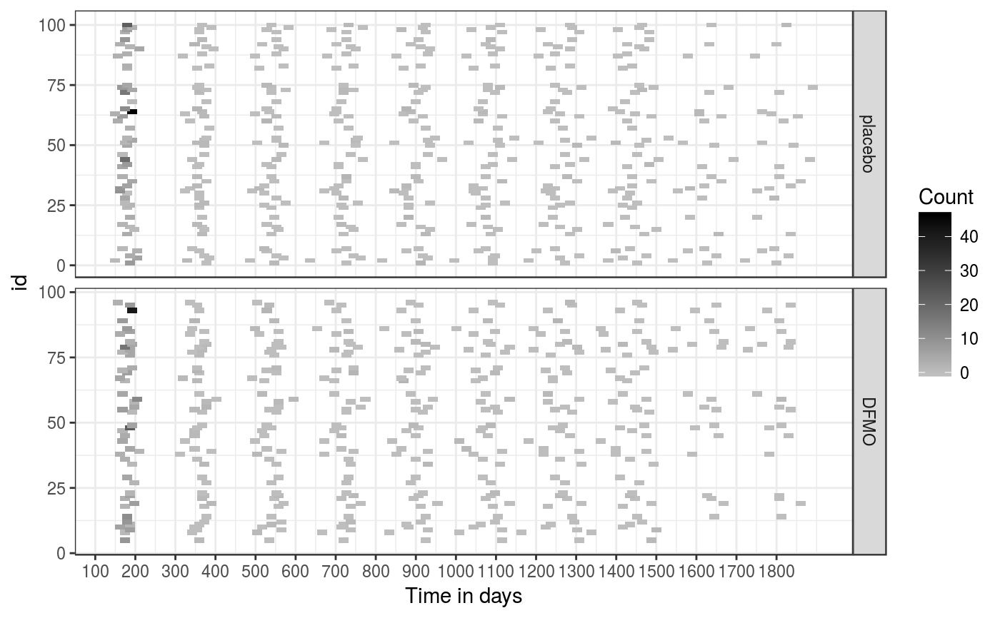

A data frame contains data on the recurrence of skin tumor. This simulated data is created for illustrative purpose and it mimic the Skin Cancer Chemoprevention Trial used in Chiou et al. (2017). This data set contains records of 100 simulated patients.
data(skiTum)
This data frame contains the following columns:
id: patient id (repeated for each recurrence).
time: observation time.
age: patient's age at enrollment; age = 1 if greater than 65, age = 0 otherwise.
male: gender; male = 1, female = 0.
dfmo: treatment (DFMO) group = 1; placebo = 0.
priorTumor: number of prior tumor from diagnosis to randomization.
count: number of new tumors since last observation time.
skinTumor
data(skiTum) library(ggplot2) skiTum$dfmo <- factor(skiTum$dfmo, levels = c(1, 0), labels = c("placebo", "DFMO")) ggplot(skiTum, aes(time, id, height = 2, width = 25)) + geom_tile(aes(fill = count)) + theme_bw() + facet_grid(dfmo ~ ., scales = "free_y") + scale_fill_gradient(low = "grey", high = "black") + labs(fill="Count") + scale_x_continuous(breaks = seq(0, 1800, 100)) + xlab("Time in days")